Un desktop liquido.A liquid desktop.
Liquid DE è un ambiente desktop per Linux su Wayland: compositore, demone, interfaccia, schermata di accesso e app di sistema, scritti insieme. Solido ma liquido: il testo resta fermo e nitido, si muove la forma.
Liquid DE is a desktop environment for Linux on Wayland: compositor, daemon, interface, login screen and system apps, written together. Solid yet liquid: text stays still and sharp, shapes move.
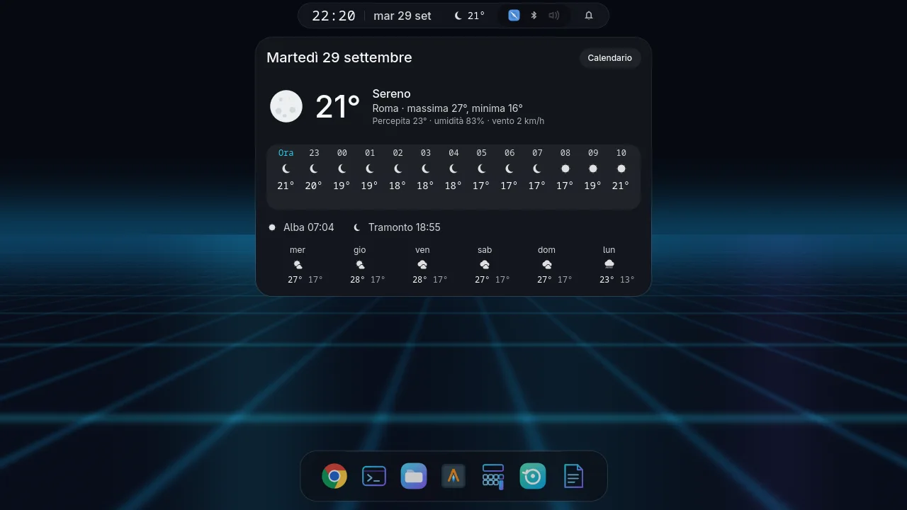
La scrivaniaThe desktop
Liquid DE parte da un'idea sola: una scrivania elastica, quasi liquida. Il testo resta fermo e nitido, si muove la forma. Niente pannelli fissi che rubano spazio: la barra (l'Isola) sta nascosta oltre il bordo alto e scende quando la chiami, la dock in basso si fa da parte quando una finestra le passa sopra, e tutto il resto esce dai bordi e dagli angoli dello schermo — la «Riva».
Liquid DE is built around one idea: an elastic, almost liquid desktop. Text stays still and sharp, shapes move. No fixed panels eating space: the bar (the Island) hides past the top edge and comes down when called, the dock at the bottom steps aside when a window moves over it, and everything else comes out of the screen edges and corners — the «Shore».

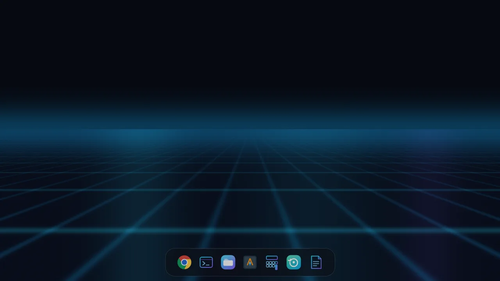
Dettagli tecniciTechnical details
- Tre programmi, due canali dichiarati: compositore (C), demone (Dart), interfaccia (QML su Quickshell).Three programs, two declared channels: compositor (C), daemon (Dart), interface (QML on Quickshell).
- Superfici della shell su wlr-layer-shell, con namespace propri (liquid-isola, liquid-stanze, liquid-cassetto…).Shell surfaces use wlr-layer-shell with their own namespaces (liquid-isola, liquid-stanze, liquid-cassetto…).
L'IsolaThe Island
Una capsula che galleggia in mezzo: ora, data, tempo, musica che suona, programmi del vassoio, segni di stato e la campanella. Ogni voce apre la sua faccia della stessa carta: l'ora porta al calendario, il sole al meteo, la campanella alle notifiche. Si trascina in alto o in basso, e con «a scomparsa» restituisce alle finestre tutto lo schermo.
A capsule floating in the middle: time, date, weather, what is playing, tray apps, status icons and the bell. Each item opens its own face of the same card: the time leads to the calendar, the sun to the weather, the bell to notifications. It can be dragged to the top or bottom, and in auto-hide mode it gives the whole screen back to windows.

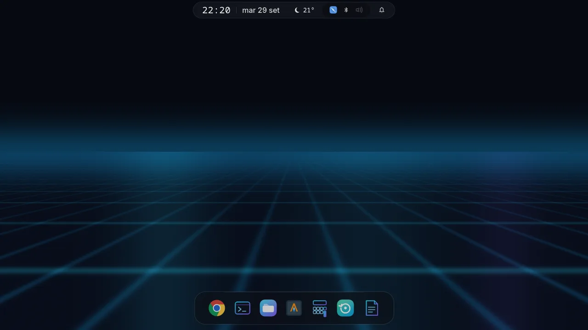


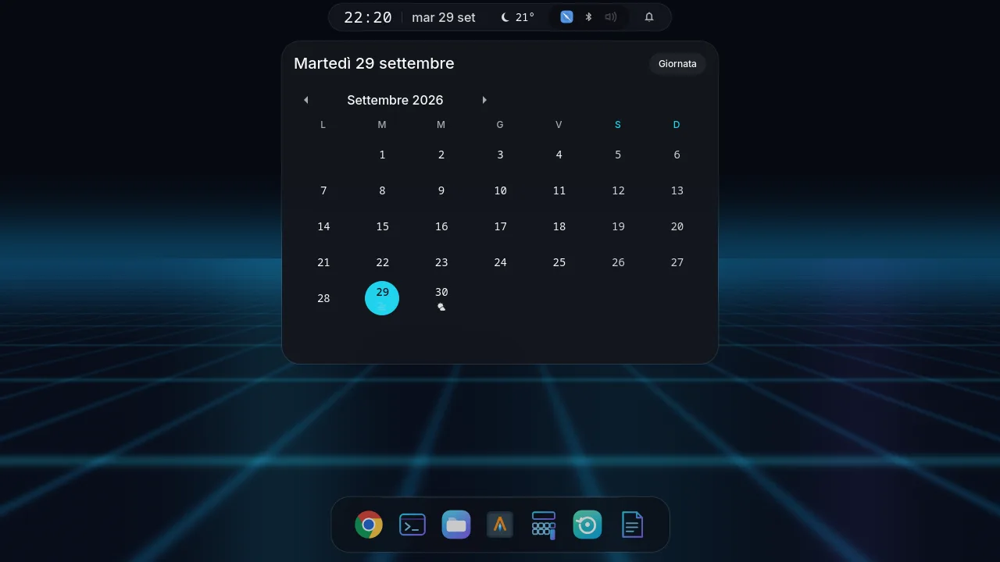
Dettagli tecniciTechnical details
- Il compositore sente la sosta sul bordo (3 px, 160 ms) e annuncia
evento bordo {"quale":"alto"}: nessuna superficie invisibile resta sopra le finestre.The compositor detects the dwell on the edge (3 px, 160 ms) and announcesevento bordo {"quale":"alto"}: no invisible surface is left over windows. - Sopra una finestra a schermo intero la sosta è di 500 ms (o subito con Super), per non disturbare giochi e film.Over a fullscreen window the dwell is 500 ms (or immediate with Super), so games and films are not disturbed.
- Meteo da Open-Meteo, chiesto dal demone e tenuto in cache.Weather from Open-Meteo, fetched by the daemon and cached.
NotificheNotifications
Le notifiche non coprono il lavoro con riquadri: passano dentro l'Isola, si leggono e se ne vanno. La storia resta nella campanella. «Non disturbare» le tiene zitte, e sulla schermata di blocco si sceglie quanto mostrare (solo quante, tutto, niente).
Notifications do not cover your work with boxes: they pass through the Island, get read and leave. History stays behind the bell. «Do not disturb» silences them, and on the lock screen you choose how much to show (count only, everything, nothing).

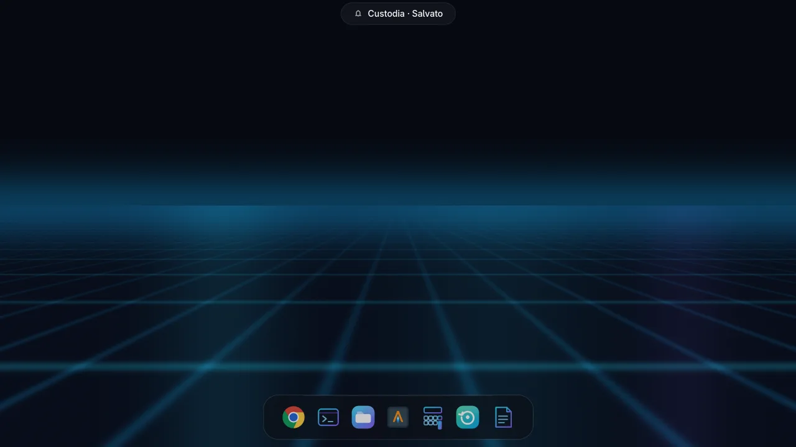

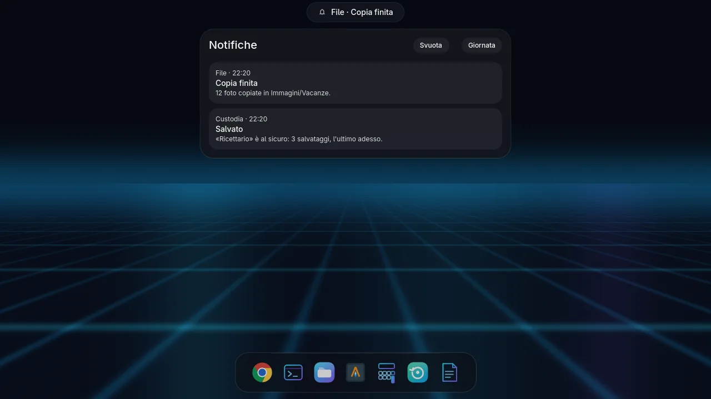
Dettagli tecniciTechnical details
- Server org.freedesktop.Notifications di Quickshell, azioni e urgenza rispettate; urgente = 10 s in vista.Quickshell's org.freedesktop.Notifications server, actions and urgency honoured; urgent = 10 s on screen.
Centro di controlloControl centre
Si apre dall'angolo in alto a destra o con Super+A. Spegni, Riavvia ed Esci si tengono premuti finché il pulsante non si riempie: un clic per sbaglio non spegne niente.
Opens from the top-right corner or with Super+A. Power off, Restart and Log out must be held until the button fills: a stray click turns nothing off.

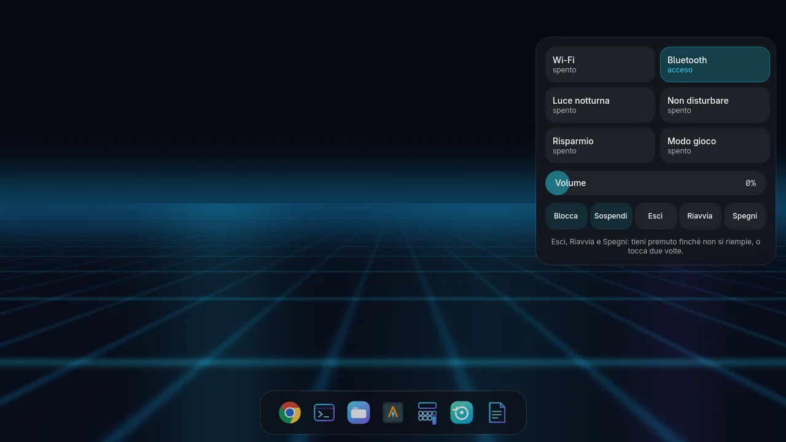
Dettagli tecniciTechnical details
- Stato di rete e radio da NetworkManager e rfkill, audio da PipeWire, luminosità da brightnessctl.Network and radio state from NetworkManager and rfkill, audio from PipeWire, brightness from brightnessctl.

La dockThe dock
Una fila di icone che si ingrandiscono al passaggio. Un'app è un'icona, anche con più finestre: il clic porta davanti, con più finestre gira fra loro. Il menù di un'icona apre una nuova finestra, la toglie o la fissa, e elenca le finestre una per una. Si trascina per riordinare.
A row of icons that grow as you pass over them. One app is one icon, even with several windows: a click brings it forward, with several windows it cycles through them. An icon's menu opens a new window, pins or unpins it, and lists windows one by one. Drag to reorder.

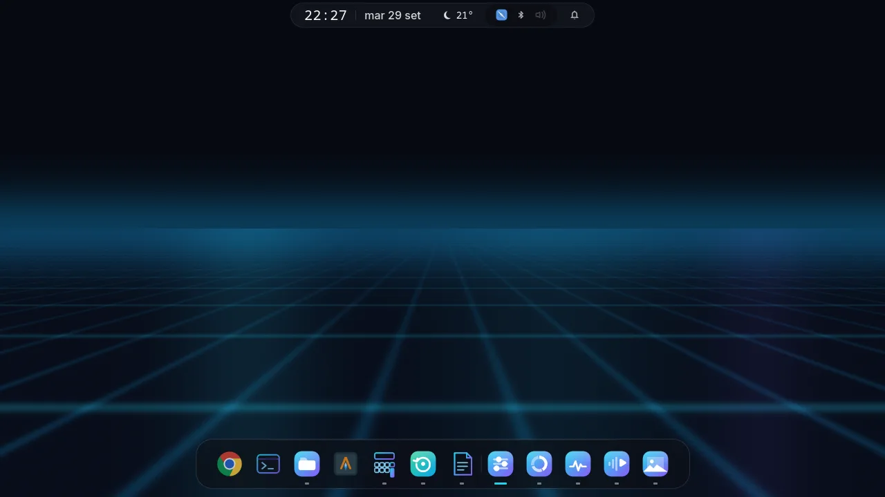

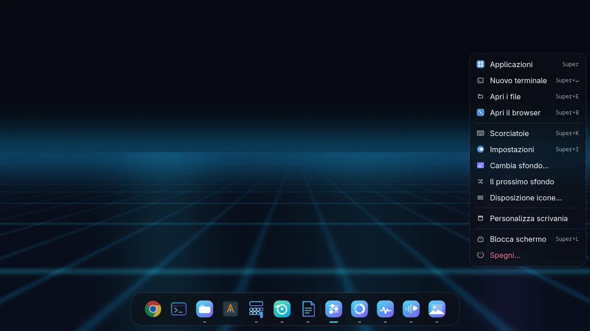
Dettagli tecniciTechnical details
- Ingrandimento con una sola molla per tutta la fila: le icone si muovono insieme invece di rincorrersi.Magnification driven by a single spring for the whole row: icons move together instead of chasing each other.
- Modo «elude»: si sposta quando una finestra le passa sopra, senza riservare spazio.«Evade» mode: it moves away when a window passes over it, without reserving space.
Le stanzeRooms
Gli spazi di lavoro si chiamano stanze. Si aprono spingendo il puntatore contro il bordo di lato o con Super+Tab; si cambia stanza con Super+1…0, Super+Ctrl+frecce o la rotellina con Super. Cambiando stanza da tastiera, la colonna sbuca un attimo per dire dove si è arrivati. Stanze e Appunti si scambiano di lato trascinandone uno verso l'altro bordo.
Workspaces are called rooms. They open by pushing the pointer against a side edge or with Super+Tab; switch rooms with Super+1…0, Super+Ctrl+arrows or Super+scroll. When switching from the keyboard, the column peeks out for a moment to show where you landed. Rooms and Clipboard swap sides by dragging one towards the other edge.

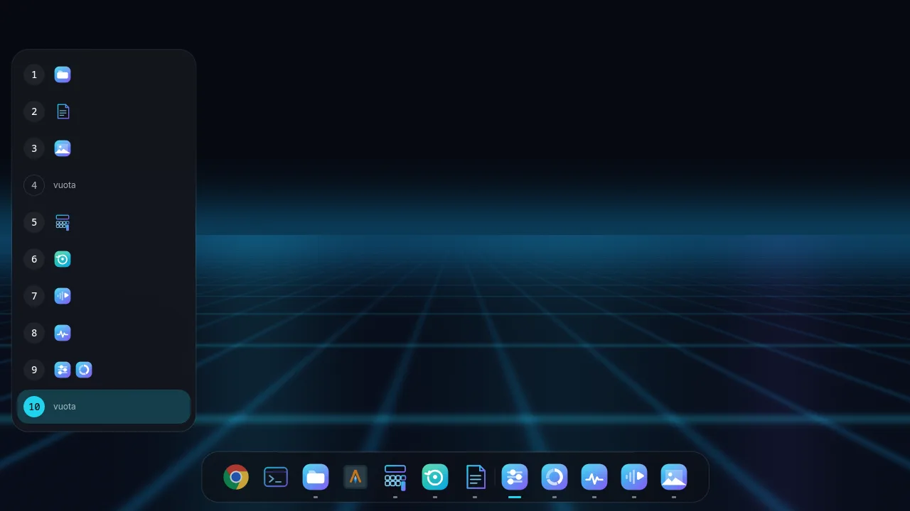
Dettagli tecniciTechnical details
- Il bordo di lato si apre con una SPINTA (90 px di movimento oltre il bordo), non con una sosta: fermarsi lì per la barra di scorrimento non apre niente.A side edge opens with a PUSH (90 px of movement past the edge), not a dwell: resting there to reach a scrollbar opens nothing.
- Dieci stanze nel compositore; le finestre X11 nascoste non contano come occupanti.Ten rooms in the compositor; hidden X11 windows do not count as occupants.
Gli appuntiClipboard
Il Cassetto ricorda quello che copi, anche le immagini. Si apre con Super+V o spingendo sul suo bordo; un tocco rimette una voce negli appunti, Canc la toglie, «Svuota» chiede conferma.
The Drawer remembers what you copy, images too. Open it with Super+V or by pushing its edge; a tap puts an item back on the clipboard, Delete removes it, «Clear» asks for confirmation.

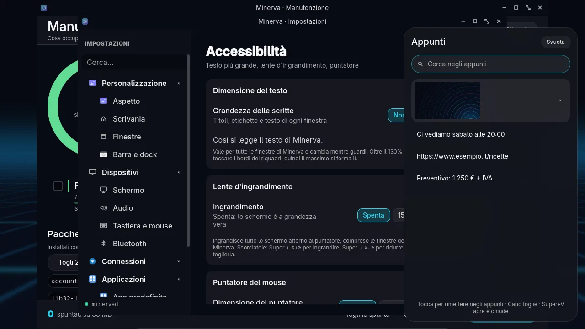
Dettagli tecniciTechnical details
- Cronologia da cliphist (wl-paste --watch), anteprime delle immagini in una cartella di runtime.History from cliphist (wl-paste --watch), image previews in a runtime folder.
Tenere premuto SuperHolding Super
Toccato, Super apre il menù; tenuto premuto, fa comparire sulla scrivania i tasti principali, ognuno nel posto dove esce la cosa che apre. Super+K mostra l'elenco completo. Le scorciatoie seguono quelle di Windows 11: Super+E, D, L, V, I, A, N, Maiusc+S.
Tapped, Super opens the menu; held, it shows the main keys on the desktop, each where its target appears. Super+K shows the full list. Shortcuts follow Windows 11: Super+E, D, L, V, I, A, N, Shift+S.

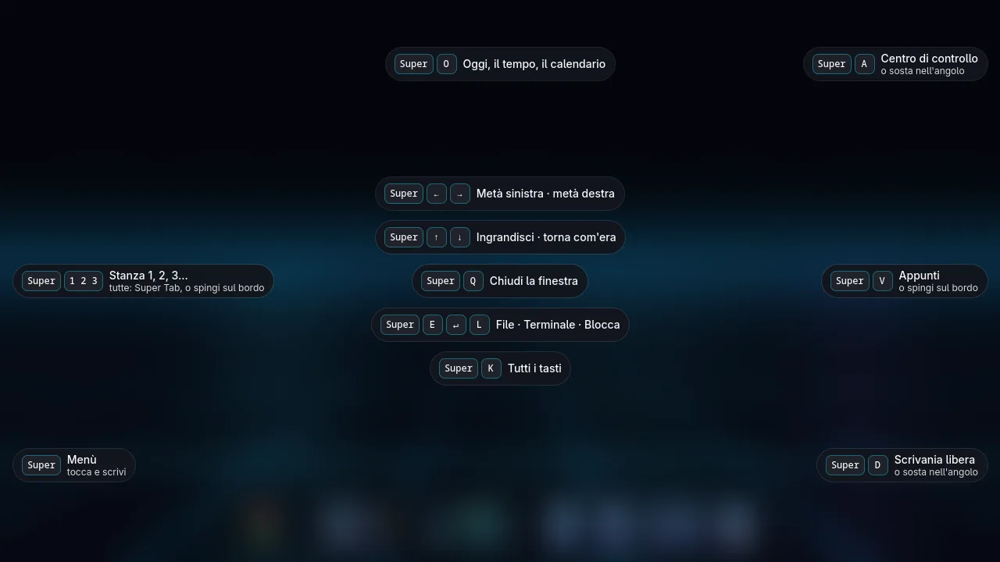

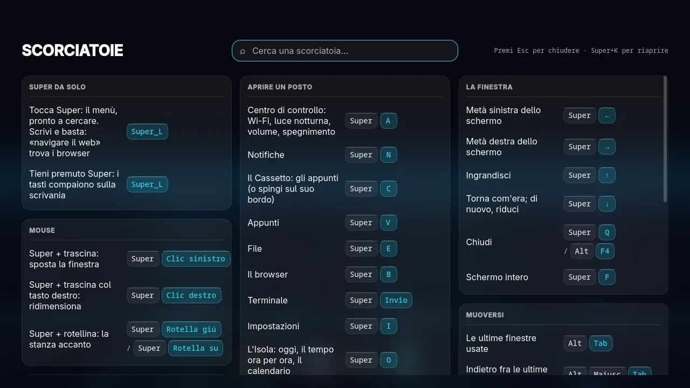
Dettagli tecniciTechnical details
- Scorciatoie in un file di testo (config/scorciatoie.minerva) letto dal compositore: tocco, tieni, ripeti, anche a schermo bloccato.Shortcuts live in a text file (config/scorciatoie.minerva) read by the compositor: tap, hold, repeat, even when locked.
Le finestreWindows
La barra del titolo la disegna il compositore, con riduci, ingrandisci, schermo intero e chiudi. Trascinando una finestra contro un bordo occupa metà schermo, negli angoli un quarto. Materiali: vetro (sfocatura) o acquerello; cornice animata intorno alla finestra attiva; «mercurio» che fonde le finestre vicine; elastico che fa ondeggiare la finestra mentre la sposti.
The compositor draws the title bar, with minimise, maximise, fullscreen and close. Dragging a window against an edge fills half the screen, into a corner a quarter. Materials: glass (blur) or watercolour; an animated frame around the active window; «mercury» merging nearby windows; elasticity that makes the window wobble while you move it.

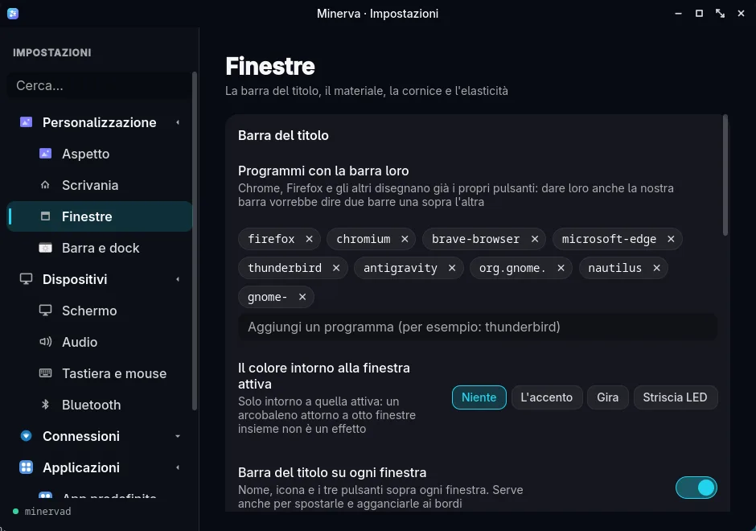
Dettagli tecniciTechnical details
- Chi chiede la barra con xdg-decoration (Chrome con «barra di sistema», Qt) la ottiene; chi se la disegna (Firefox, GTK) resta senza la nostra.Apps that request the bar via xdg-decoration (Chrome with «system title bar», Qt) get it; apps drawing their own (Firefox, GTK) do not get ours.
- Nuove finestre al centro dello spazio utile, a cascata se il posto è preso.New windows centred in the usable area, cascaded if the spot is taken.
- XWayland pigro: parte al primo programma X11 (Steam, Wine) e si ferma quando non serve.Lazy XWayland: starts with the first X11 program (Steam, Wine) and stops when not needed.
FileFiles
Due riquadri affiancati, schede, nuova finestra vera. Copia, taglia e incolla con i trasferimenti che si mettono in pausa; cestino con ripristino; comprimi ed estrai (zip, 7z, rar, iso, tar); proprietà con permessi a caselle; dischi da montare, espellere e formattare; modalità amministratore con la finestra della password; trasmetti alla TV.
Two side-by-side panes, tabs, a real new window. Copy, cut and paste with pausable transfers; trash with restore; compress and extract (zip, 7z, rar, iso, tar); properties with checkbox permissions; drives to mount, eject and format; administrator mode with the password window; cast to the TV.

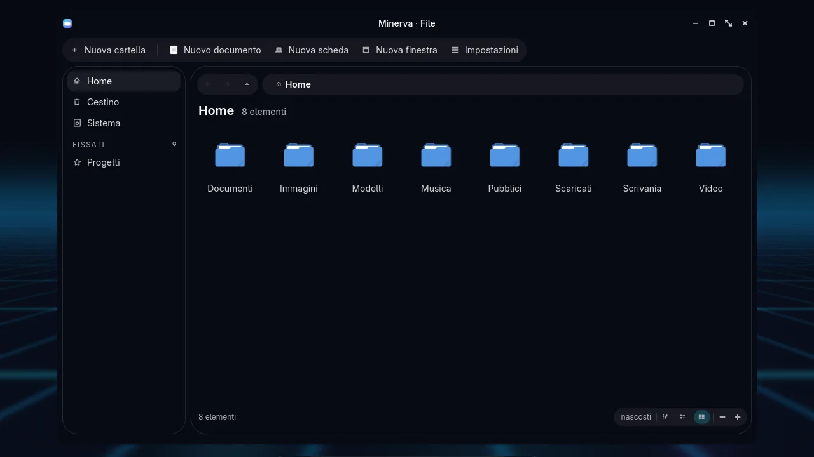
Dettagli tecniciTechnical details
- È un processo a sé (filemanager.qml): un errore lì non spegne la barra.It is its own process (filemanager.qml): an error there cannot take the bar down.
- Le operazioni sui file le fa il demone (fs_*), una sola coda di trasferimenti per tutte le finestre.File operations are done by the daemon (fs_*), one transfer queue for all windows.
EditorEditor
Un editor di testo semplice: schede, trova e sostituisci, vai alla riga, a capo, zoom, carattere a larghezza fissa. Il salvataggio è atomico, e i file di sistema si aprono e si salvano chiedendo la password.
A simple text editor: tabs, find and replace, go to line, word wrap, zoom, monospace font. Saving is atomic, and system files open and save by asking for the password.

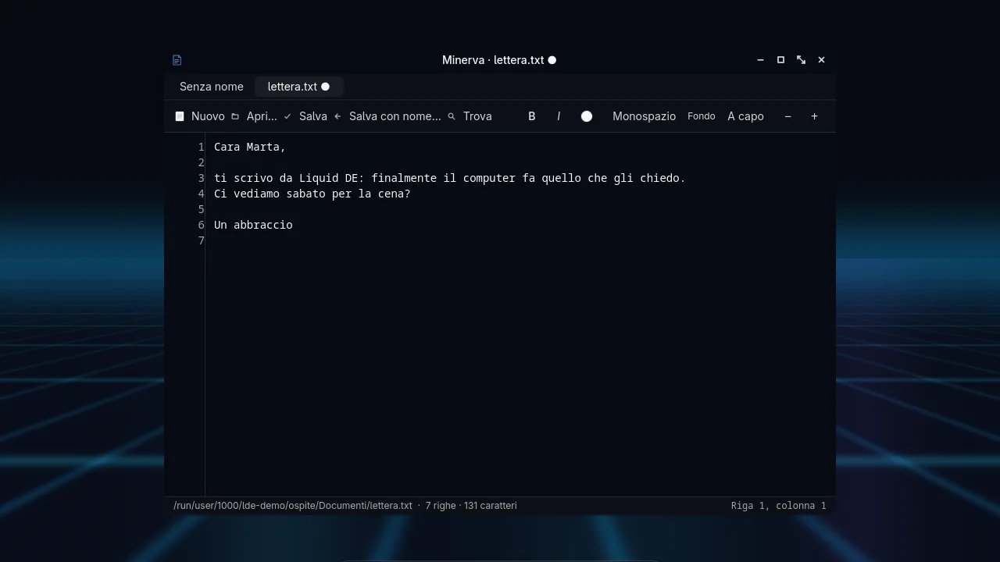
AnteprimaPreview
Aprendo un'immagine, la cartella diventa l'album: zoom, adatta, dimensione reale, ruota, schermo intero, provino a contatto, dettagli. La Galleria ordina le foto per giorni e anni, con preferiti e doppioni.
Opening an image turns its folder into the album: zoom, fit, actual size, rotate, fullscreen, contact sheet, details. The Gallery sorts photos by days and years, with favourites and duplicates.

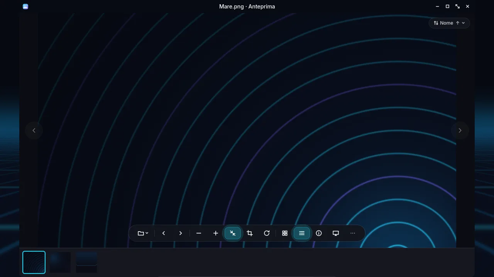
Dettagli tecniciTechnical details
- Indice fotografico nel demone, miniature con ffmpegthumbnailer per i video.Photo index in the daemon, thumbnails via ffmpegthumbnailer for videos.
MediaMedia
Lettore audio e video con playlist, ripeti e casuale, finestra picture-in-picture e visualizzatore. «Taglia» accorcia un file sulla sua forma d'onda; «Download» cerca e scarica.
Audio and video player with playlist, repeat and shuffle, picture-in-picture and visualiser. «Trim» shortens a file on its waveform; «Download» searches and fetches.

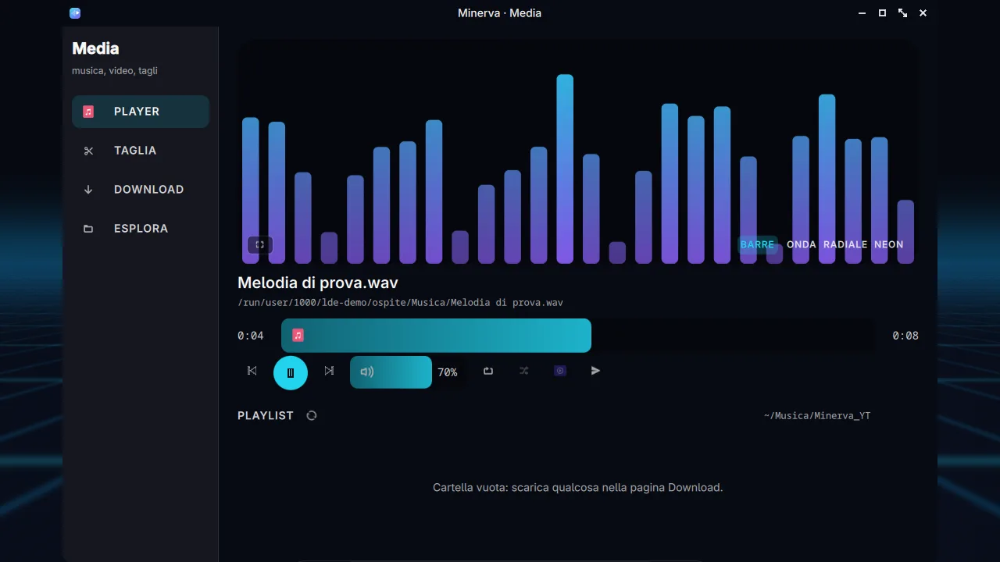
Dettagli tecniciTechnical details
- Qt Multimedia con backend FFmpeg; taglio e forma d'onda con ffmpeg nel demone.Qt Multimedia with the FFmpeg backend; trimming and waveform via ffmpeg in the daemon.
CalcolatriceCalculator
Quattro operazioni, parentesi, √, x², π, percentuale, memoria. Si usa anche solo dalla tastiera.
Four operations, parentheses, √, x², π, percent, memory. Works from the keyboard alone.

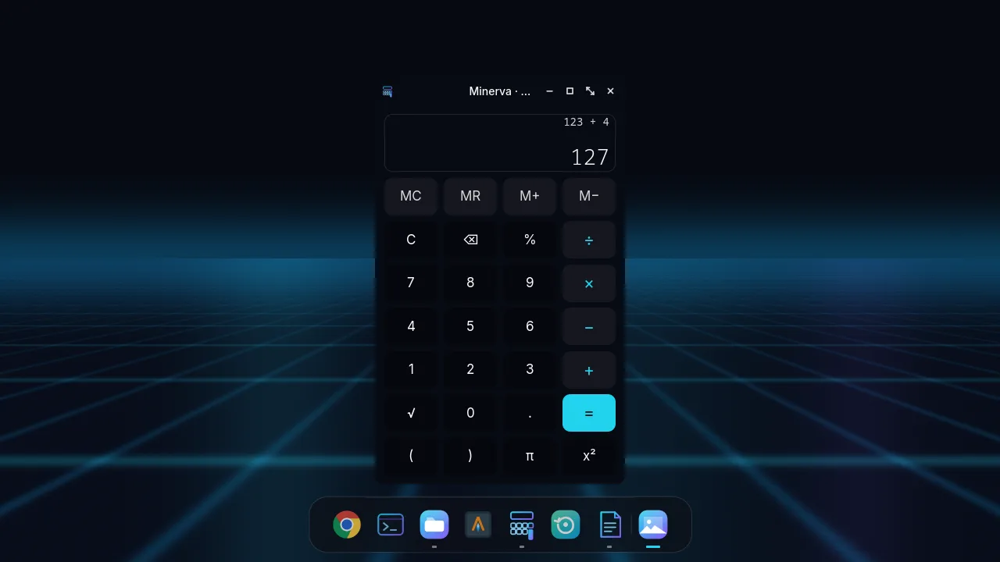
Dettagli tecniciTechnical details
- Analizzatore delle espressioni scritto apposta: niente eval.A purpose-written expression parser: no eval.
AttivitàActivity
Il cruscotto del computer: grafici di processore, memoria, rete, scambio e temperatura. Le app aperte con il loro nome vero invece del nome del processo; «Chiudi» con gentilezza e, se non basta, «Termina». Si apre anche con Ctrl+Maiusc+Esc.
The computer's dashboard: graphs for CPU, memory, network, swap and temperature. Open apps by their real name rather than their process name; «Close» politely and, if that is not enough, «Kill». Also opens with Ctrl+Shift+Esc.

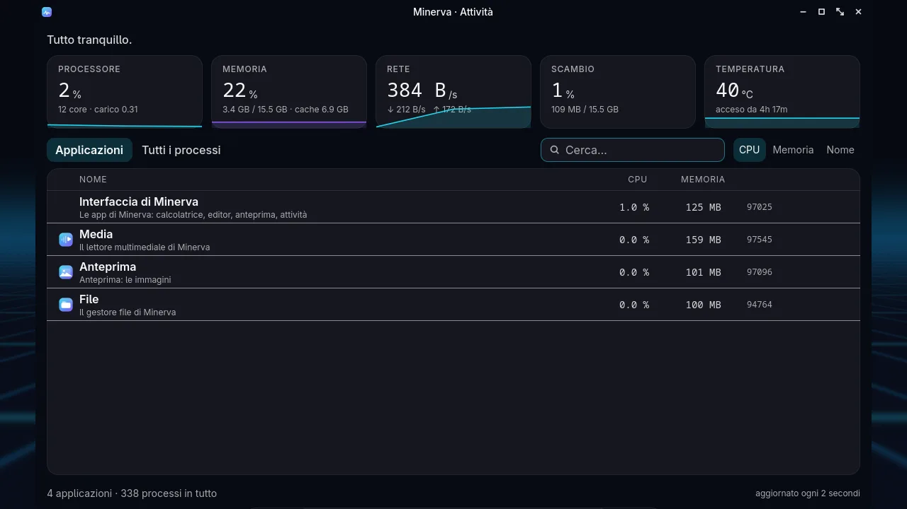
CustodiaCustodia
La storia e la sicurezza delle tue cartelle, senza dover sapere cos'è git. «Salva» tiene ogni versione; «Punto di ritorno» fa una copia di tutto; «Torna a…» si può sempre annullare. Le destinazioni: una cartella, un disco esterno o GitHub, con l'accesso dal browser e la chiave nel portachiavi.
The history and safety of your folders, without having to know what git is. «Save» keeps every version; «Restore point» copies everything; «Go back to…» can always be undone. Destinations: a folder, an external drive or GitHub, with browser sign-in and the key kept in the keyring.

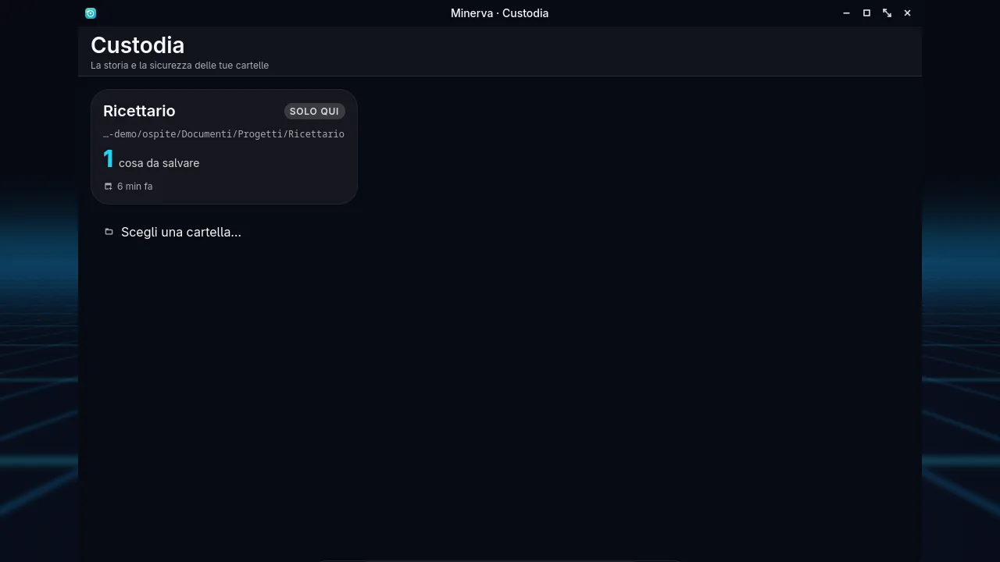
Dettagli tecniciTechnical details
- Nessuna operazione che può perdere lavoro parte senza un punto di ritorno prima; se il punto non riesce, l'operazione non parte.No operation that could lose work runs without a restore point first; if the point fails, the operation does not run.
- Firma dei salvataggi presa dall'account GitHub con l'indirizzo noreply; controllo dei segreti prima di ogni invio.Save signatures taken from the GitHub account with the noreply address; secret scanning before every push.
ManutenzioneMaintenance
Guarda cosa occupa posto sul computer, famiglia per famiglia, e dice per ognuna se torna da sola o no. Si pulisce solo quello che si vede e si spunta.
Shows what takes space on the computer, family by family, and says for each whether it comes back on its own. Only what is shown and ticked gets cleaned.

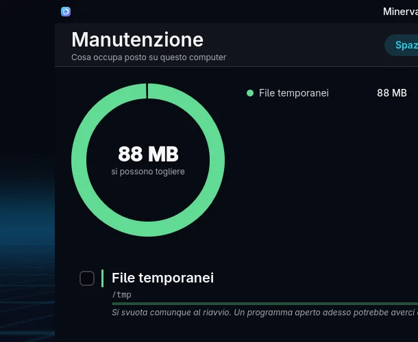
ImpostazioniSettings
Diciannove sezioni: aspetto, scrivania, finestre, barra e dock, schermo, notifiche, alimentazione, audio, rete, Bluetooth, tastiera e mouse, data e lingua, accessibilità, app predefinite, avvio, account online, utente, accesso e l'aiuto. Sotto ogni interruttore una riga spiega cosa fa. Le modifiche allo schermo tornano indietro da sole se non le confermi.
Nineteen sections: appearance, desktop, windows, bar and dock, display, notifications, power, audio, network, Bluetooth, keyboard and mouse, date and language, accessibility, default apps, startup, online accounts, user, login and help. A line under every switch explains what it does. Display changes revert by themselves unless confirmed.

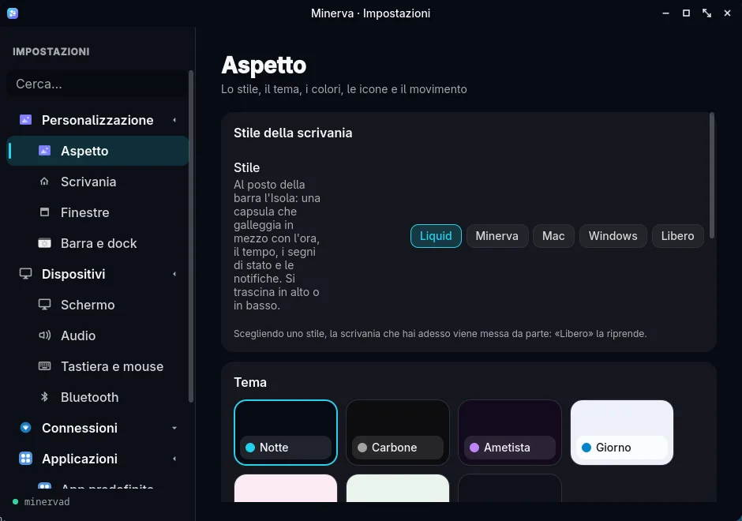

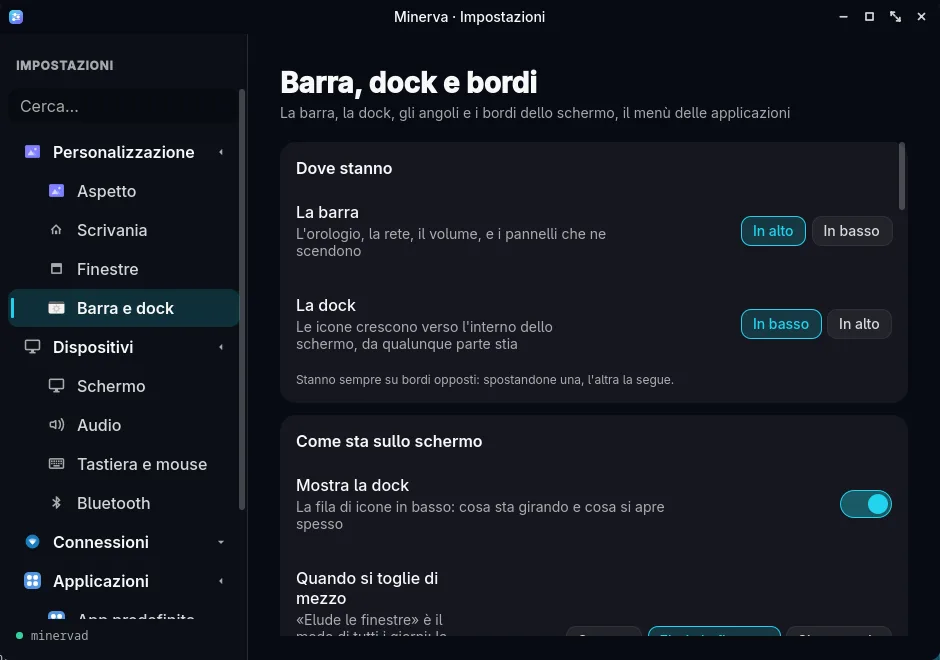

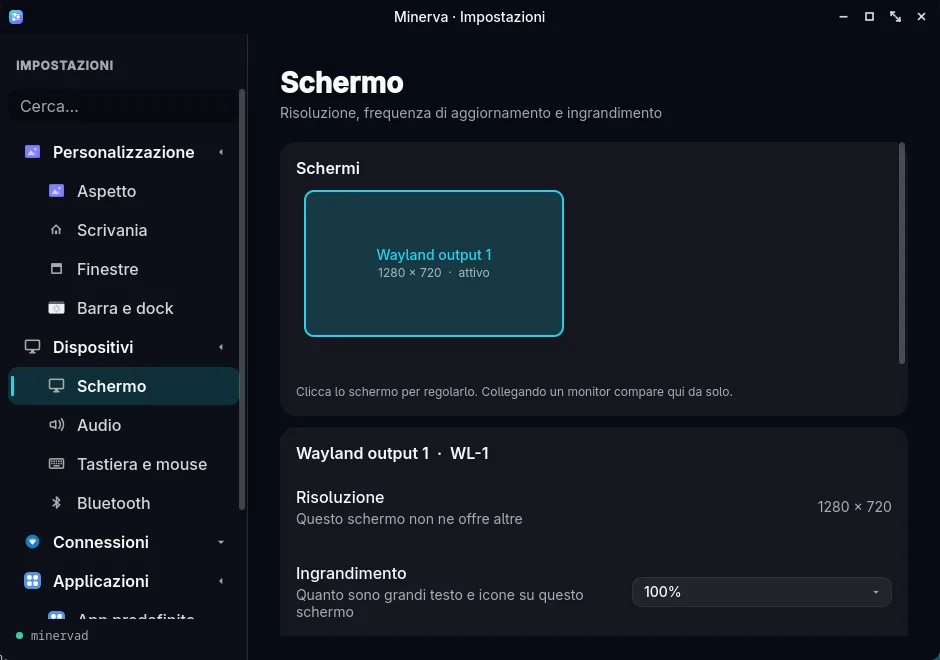

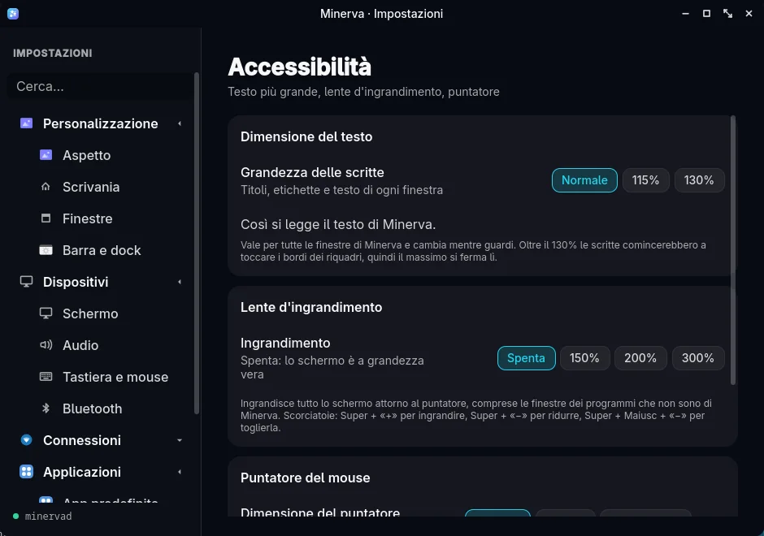
Dettagli tecniciTechnical details
- Tutte le impostazioni in un file JSON tenuto dal demone; ogni finestra le riceve con l'evento settings_changed.All settings live in one JSON file owned by the daemon; every window receives them via the settings_changed event.
ArchitetturaArchitecture
Tre programmi che si parlano solo attraverso due canali dichiarati, mai per scorciatoie. Ognuno può ripartire senza portare giù gli altri.
Three programs that talk only through two declared channels, never through shortcuts. Each can restart without taking the others down.
Compositore — minerva-waylandCompositor — minerva-wayland
C, circa 17.000 righe, su una copia privata di wlroots 0.20.2 compilata come libreria statica. Gli effetti (sfocatura, angoli, cornice, elastico, mercurio) stanno dentro la scena del fork. Renderer GLES2; XWayland; protocolli per i giochi (fifo-v1, commit-timing-v1, presentation-time); wlr-screencopy per le schermate.
C, about 17,000 lines, on a private copy of wlroots 0.20.2 built as a static library. Effects (blur, corners, frame, elasticity, mercury) live inside the fork's scene graph. GLES2 renderer; XWayland; gaming protocols (fifo-v1, commit-timing-v1, presentation-time); wlr-screencopy for screenshots.
Demone — minervadDaemon — minervad
Dart compilato, circa 36.000 righe: impostazioni, file, rete, audio, Bluetooth, accesso, Custodia, meteo, foto, processi, terminale. Parla con la shell su un socket Unix in $XDG_RUNTIME_DIR: JSON, un messaggio per riga, con una parola d'ordine che il demone scrive per sé.
Compiled Dart, about 36,000 lines: settings, files, network, audio, Bluetooth, login, Custodia, weather, photos, processes, terminal. Talks to the shell over a Unix socket in $XDG_RUNTIME_DIR: JSON, one message per line, with a password the daemon writes for itself.
Interfaccia — minerva-shellInterface — minerva-shell
QML su Quickshell, circa 82.000 righe: scrivania, barra, dock, pannelli, schermata di blocco e di accesso, e le app. Le app sono processi separati: un errore in una non spegne la barra.
QML on Quickshell, about 82,000 lines: desktop, bar, dock, panels, lock and login screens, and the apps. Apps are separate processes: an error in one cannot take the bar down.
Sessione e sicurezzaSession and security
Accesso con greetd; blocco con PAM (file /etc/pam.d/liquid-de); finestra della password nostra sopra polkit-agent-1; portali xdg-desktop-portal-wlr per condividere lo schermo; sessione di recupero con un solo terminale per riparare.
Login with greetd; lock with PAM (/etc/pam.d/liquid-de); our own password window on top of polkit-agent-1; xdg-desktop-portal-wlr portals for screen sharing; a recovery session with a single terminal for repairs.
ScorciatoieShortcuts
| Super | Menù delle appApp menu |
| Super (tenuto) | I tasti sulla scrivaniaKeys on the desktop |
| Super+A | Centro di controlloControl centre |
| Super+O | Oggi: tempo e calendarioToday: weather and calendar |
| Super+N | NotificheNotifications |
| Super+V | AppuntiClipboard |
| Super+Tab | StanzeRooms |
| Super+1…0 | Vai alla stanzaGo to room |
| Super+Maiusc+1…0 | Porta la finestra nella stanzaMove window to room |
| Super+E | FileFiles |
| Super+I | ImpostazioniSettings |
| Super+Invio | TerminaleTerminal |
| Super+D | Scrivania liberaShow desktop |
| Super+L | BloccaLock |
| Super+K | Tutte le scorciatoieAll shortcuts |
| Super+←/→ | Metà sinistra / destraLeft / right half |
| Super+↑/↓ | Ingrandisci / torna com'eraMaximise / restore |
| Super+F | Schermo interoFullscreen |
| Super+Q · Alt+F4 | Chiudi la finestraClose window |
| Alt+Tab | Le ultime finestre usateRecent windows |
| Super+Maiusc+S · Stamp | SchermataScreenshot |
| Ctrl+Maiusc+Esc | AttivitàActivity |
| Super+Ctrl+R | Risveglia l'interfacciaWake the interface |